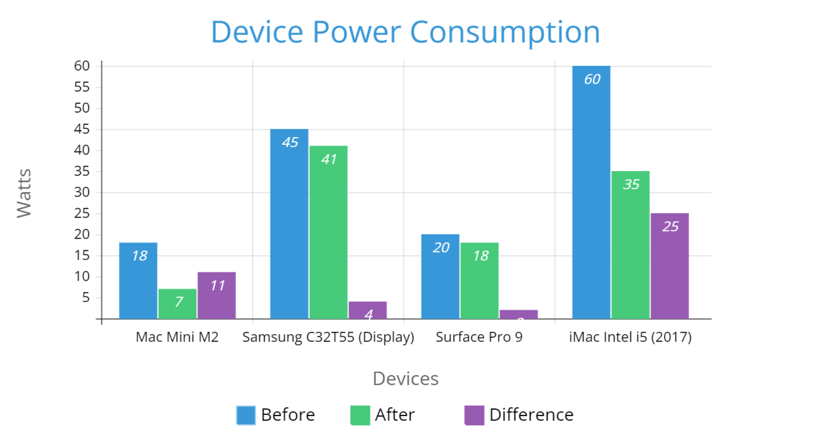

Use Energy-Saving Saving Features To Optimise The Power Consumption Of Devices
What Benefits Does This Have?
Energy demand is heavily reduced, which allows for smaller renewable energy sources to replace the current unrenewable sources. Because of this change, carbon dioxide emissions will drop, and many coal (and other materials that are used) mines will cease operation. Additionally, the lower energy demand results in a more stable power supply, and the operating costs decrease along with the amount of money required to buy the electricity.
What Was The Experience Like Implementing This Strategy?
I went around the house looking for devices that could be optimised. I found 4 devices that could be optimised (and was able to control), and looked around in the settings. I applied all the settings that helped. This strategy was successfully implemented.
Data
| Mac Mini M2 | Samsung C32T55 (Display) | Surface Pro 9 | iMac Intel i5 (2017) | |
|---|---|---|---|---|
| Before | 18 watts | 45 watts | 20 watts | 60 watts |
| After | 7 watts | 41 watts | 18 watts | 35 watts |
| Difference | 11 watts | 4 watts | 2 watts | 25 watts | Total Difference | 42 watts |